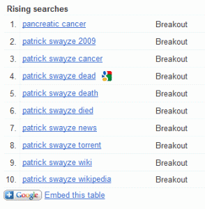

In late January 2012, stories started emerging about Patrick Swayze being hospitalized.
Is that due to confusion over recent interviews with his widow, Lisa?
Is this because his classic movie, Point Break, is — according to the Huffington Post — getting a reboot?
I don’t see any news stories related to his brother, actor Don Swayze. So, it’s not that the two were confused.
When I checked Google Insights, the following terms were listed in the current Rising Searches.

When the term is indicated as “Breakout,” it means it has at least a 5000% increase in searches, relative to the recent past.
Currently, most of those searches are coming from: Canada, USA, UK, Ireland, Australia, Portugal and Hungary, in that order.
Is there a logical explanation for this quirky surge? I’m looking for a logical explanation.
It might simply be the confusing headline from Fox — “Patrick Swayze’s widow Lisa Niemi blasts tabloids for coverage of husband’s cancer” —
which didn’t make it clear that he was hospitalized over two years ago.
That seems the most likely explanation.
However, I’m also wondering if this is Mandela Effect again. I’d like to think there’s a parallel world in which Patrick Swayze is alive and well, even if — in that reality — he’s briefly in the hospital, hopefully for something minor.
Patrick Swayze, the talented actor, dancer and singer, was born on August 18, 1952 and left this world on September 14, 2009.
His acting career was highlighted by many wonderful films in which he starred, including Ghost, Point Break and Dirty Dancing.
Swayze didn’t follow the usual death narrative. He was diagnosed with an aggressively fatal cancer, hospitalized on death’s door, but kept working, having had a critically acclaimed tv show right before he died. I can see how people would be confused, thinking he’d recovered. I know I did. I was shocked that he made The Beast while dying. Now that I’m terminally ill, I totally understand it. Life doesn’t stop when you’re sick.
I remember Mandela dying when I was a teenager, I wasn’t into him but my sister was.
I’ve heard people say David Soul had died but never saw a news report.
The challenger blew up in 1984.
I’ve never been good at geography and never cared for it. I had it in my head that the maps have changed so much and so often that there was no need to wrap my head around it. I have seen many and none of them match. I do believe New Zealand has moved and Australia is in a weird place. Have you noticed that most of the people experiencing this memory say they aren’t good at geography? I’m good at everything but geography
I remember the show TAPS and I am in Texas. My mother used to watch it
My son remembers it but I can’t ask my mom because she is gone.
I have some memories of Patrick Swayze dying in 2009 my imdb says he died in 2009. The last movie I remember hearing about him in was black dog. I remember having a conversation with my grandmother about him because I found her watching roadhouse. Which is weird because she’s a sweet old Christian lady who doesn’t watch movies. I asked her why and she said she went to school with his great-aunt and was interested. I remember saying why didn’t you tell me before, she said she didn’t think me and my sister knew him. And somehow I thought he died then. Maybe sometime after black dog was when this happened. I should probably ask her because she was always so interested in him.
Dom deluise had been popping in and out of my timeline for as long as I can remember.
I have not read the whole site but I’m sure I have many more discrepancies.
Thanks for the site and the great collaboration of info.
I just want to correct SolarFlare’s info regarding the Challenger disaster.
That occurred in 1986, not 1984. The Columbia disaster occurred in 2003, in case they got the two mixed up.
Also I’ve always been great at geography but I’m also one of the ones who remembers New Zealand being northeast of Australia.
Hi Skycro, I remember when the Challenger disaster happened. My colleagues and I were sitting around talking about it during our morning coffee break. I remember it so clearly. I left that job in October 1984, two months after I turned 21…!!
i specifically remember him dying in 2009. i was friends at the time with a girl who LOVED the movie dirty dancing, we watched it every single time i went to her house for a sleepover. we were 8, and i went to her house one day and she was sad because her dad had found out that patrick swayze had died. she even asked me to help take down her dirty dancing poster because it was making her sad
btw: im 13, so its not like im getting old and foggy, also ive been told by multiple educational therapists that i have an exceptional memory (their words not mine)
I clearly remember reading an interview with Swayze about his recovering and preparing for a new role….
I remember reading an artcile about him making a full recovery and then the next day he was dead.
This is about what I remember. I knew he had gotten sick, then I thought he had recovered. Turned out he died.
was wäre wenn es “Doppelgänger” , Klone ….etc sind????????????????????????
[Fiona’s addition: This translates to English pretty easily, referencing “doppelgangers” or duplicates (apparent clones) that have been observed for centuries.]
I am 33, but into older rock. I have a strong memory of my Dad and the radio saying, American Woman was was by Jimi Hendrix. I was convinced this was true until about two years ago, and realized it was The Who? I asked my Dad, and he said The Who. I believed that before Lenny Kravitz came out, and to top it off I thought Lenny Kravitz was JimI Hendrix’s son from some fling. I have no idea where I got that idea. The idea/fact that Jimi did not ever sing American Woman seems strange. Maybe it just sounds like his style?
Just a note that “American Woman” was by the Canadian band The Guess Who and not the British Band The Who.
I’d never heard the Jimi Hendrix/Lenny Kravitz connection but I did a little digging. Kravitz was born May 26, 1964 and his father is supposedly a producer. Jimi was actually recording in New York during that month (for Don Covay & the Goodtimers) before touring with The Isley Brothers later that year, but nine months earlier he was in Nashville. Hendrix would have been 21 at the time.
I remember Patrick Swayze dying of aggressive pancreatic cancer over twenty years ago.
In my timeline, he never made it out of the hospital way back then.
I also remember your article on this page mentioning a hospitalization “over twenty years ago”, which set my mind at ease, now I cannot find that reference on this webpage. That happened within the last sixty seconds, at 5:00 AM EST 07 May 2015.
I very much remember Patrick Swayze having cancer, making a full recovery and starting a new show. I remember all the reports about him doing well and how he beat cancer. He looked great, did interviews and seemed in great shape. And then, within 2 months he supposedly just died from Cancer. I was shocked, because I hadn’t heard anything about him getting it again. He was all over the news at this point too. It was really strange to me. Anyone else remember this?
Does anyone remember Patrick Swayze getting into rap music before he died? I have an old XXL mag where they had a long running feature where they interviewed celebrities about whether they liked rap or not. While doing a piece on PS the reporter was surprised to find out that Swayze had been recording and described his music as “more gangster than Eminem.” I remember him dying shortly thereafter. I’m going to try to find it and upload it.
Mark Ward, I’d never heard of Swayze getting into rap music. For me, that’s a rather jarring concept, and presents a very different side of him.
I was absolutely blown away to read that Swayze died in 2009 – no way, no how does that add up for me. In my memory, he died in 2012/2013. It is not possible that this was me seeing a more recent news report about his wife speaking out and confused it for a death announcement, I’ve been reading tabloid magazines as a guilty pleasure weekly since 2004. I followed the Swayze illness start to finish.
For me, he died pretty recently (2012/2013), without a doubt. In 2009, I lived in a completely different residence from where I do now, which is where absolutely all of my memories of Swayze’s illness and death take place. I remember making a “Ghost” joke with my husband outside of our bathroom of where we live now. There’s no way this happened in 2009 for me.
I remember about a year of magazines reporting on his condition before he died – “Swayze months to live”, “Swayze caught smoking despite illness”, “Swayze’s brave last days”, etc.
Then, things took a turn and I started reading about how he was making a miraculous recovery due to some experimental procedure he went under. He started to look healthier and reports from his show, “The Beast” were saying that crew and costars were amazed at how well he seemed to be doing. I thought to myself “it seems like he’ll make it out if this, after all”.
Then he died, and I was surprised because I thought he was now doing ok – it seemed out of nowhere.
Even though I believe in ME and have experienced many other cases of ME, I could still maybe, possibly explain the 2009 era death away by telling myself “well, maybe time just flew by faster than I thought”… If it were not for the fact that I KNOW I was living in my current residence when he died, and I was living somewhere else entirely in 2009. No way Swayze died the same year as Michael Jackson, either. Just no way does any of that add up in my memory.